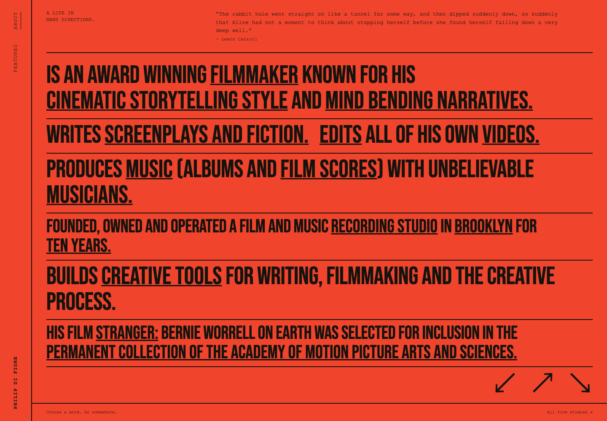
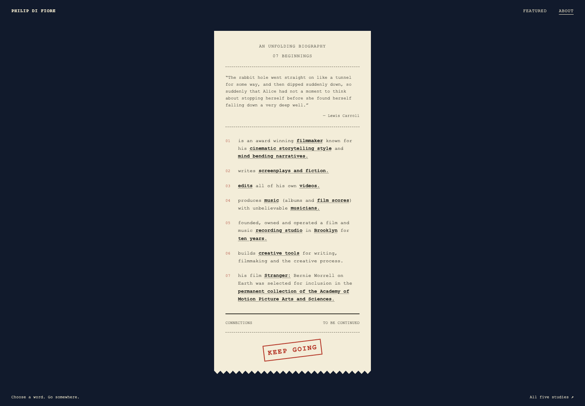
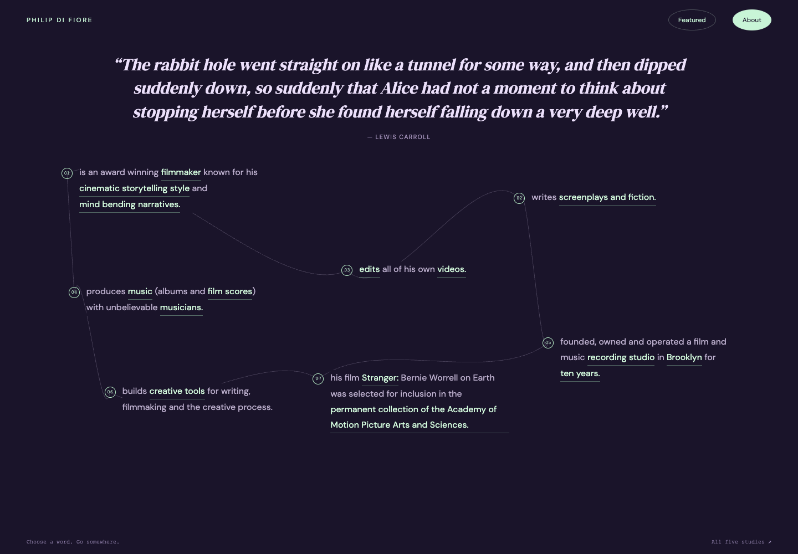
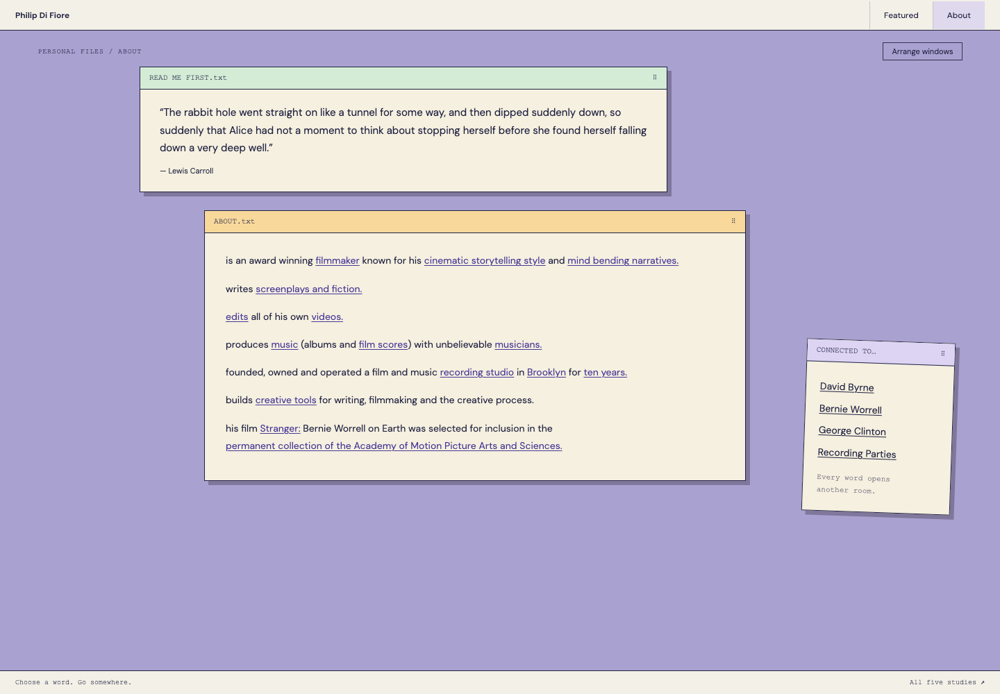
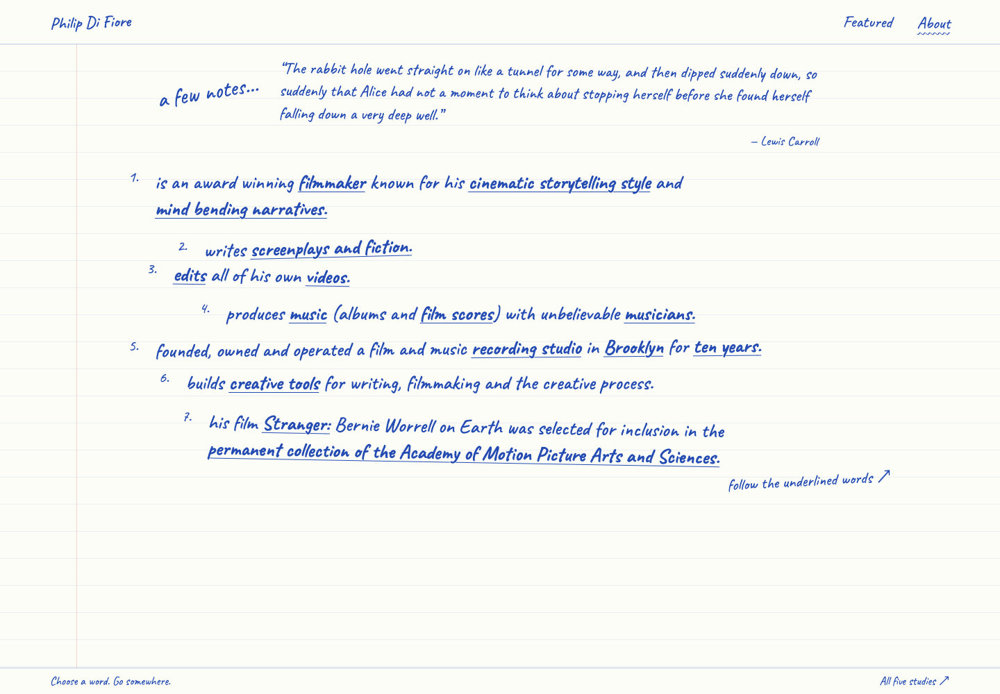

About / five radical studies
Five different worlds.
Five new visual directions for the same unfolding biography. Open any study and follow its words into the rabbit hole.

01
Scarlet Sign
A wall of type. Red ink, condensed letters, and words large enough to inhabit.

02
Thermal Receipt
A small, continuous paper object. Numbered beginnings with no final total.

03
Constellation
A dark, open field. Thoughts scattered across a network of possible routes.

04
Personal Operating System
A lavender desktop of movable windows. Pick up the title bars and rearrange your entrance.

05
Blue Ink Notebook
A page of handwritten notes. Loose lines, blue ink, and words that lead elsewhere.
The existing About page and earlier studies are saved.Open current About ↗